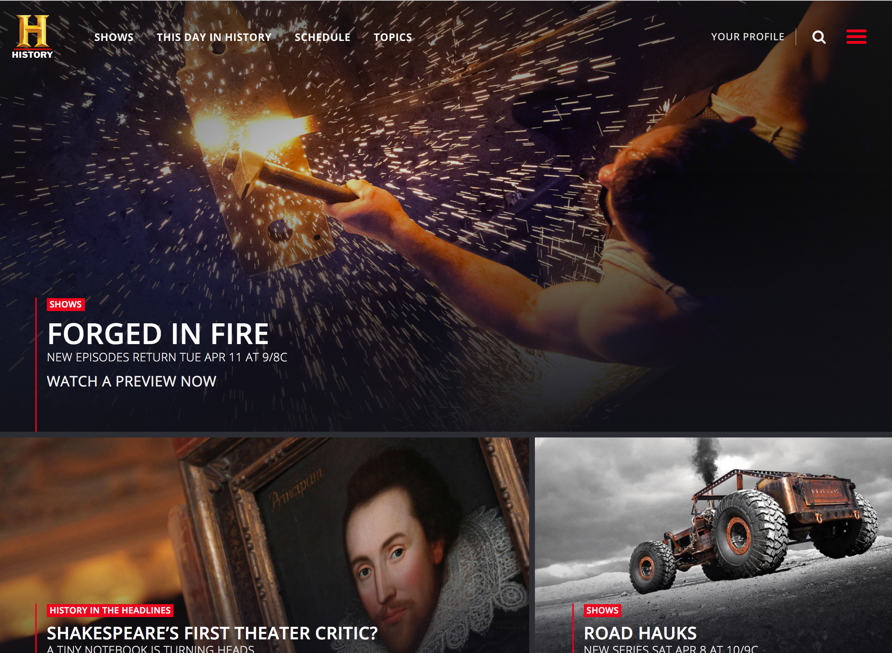

Experience
I recently graduated from a Front-End Web Development course at General Assembly where I learned HTML, CSS, JavaScript, jQuery and how to be an awesome Front-End Web Developer! During my spare time, I enjoy swimming, biking, and spending time with my kids, Loi & Lydi.
Portfolio
A+E Networks 2011 - present
Portfolio includes: history.com, mylifetime.com, aetv.com and fyi.tv.
EDUCATION
- General Assembly — FEWD 2017
- School of Visual Design —Continuing Education 2006
- Parsons School of Design — BFA 2003(Honors)